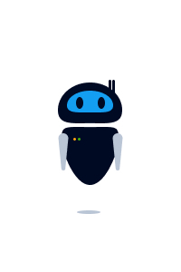

Websites interativos são mais envolventes e interessantes. Isso pode criar efeiros duradouros na mente dos usuários.
O atributo onclick é usado para acionar uma ação quando em elemento HTML é clicado ou tocado
Uma das muitas ações que você pode acionar é a exibição de uma mensagem de alerta.
<button onclick="alert('Olá, Mundo!')">Clique</button>
Você pode tornar outros elementos HTML interativos.
<img src="icon.jpg" onclick="alert('Oi')">
Uma function é um pedaço de código que pode ser "chamado" e reutilizado em um programa quantas vezes você precisar
Você pode usar JavaScript para fazer alterações nos elementos HTML acionados pela entrada do usuário.
<img src="img/robot-c.jpg" onclick="src='img/tree.jpg'">

O código abaixo usa dois botões para alterar a imagem exibida na página.